Using GitHub


For screen-shot slides, click here
For the YouTube narration, click here
Background
When working with code, it is very important to stay organized. You ultimately want to avoid being in a scenario where you need some code you wrote the previous month, and then having to search through multiple .R files, scattered across multiple folders, external hard-drives, and computers to find it. Likewise, you want to avoid ending up having identified multiple similarly-named copies of your original file that have all since diverged slightly from each other in some way that you have long since forgotten.

Ideally, everything needed for your coding script to successfully run should be kept within a project-specific folder. This ensures, that should you transfer it to another computer (whether your own or a colleagues) that you would still be able to recreate the scripts output.
Likewise, if you make changes to your script, and your code stops working (no longer returns the expected output, ie. breaks), having a record of what changes were made since the last working version would be very helpful in pinpointing what went wrong. For beginners, this often ends up being a typo in a function name, or an accidentally misplaced comma somewhere in your document.
For these reasons, in this course, we will be extensively using the version control software Git from the very beginning. We will also have you create a GitHub account, which will allow you to back-up your coding projects online as private repositories. Not only is this useful in case something happens to your computer, but it allows you to switch between separate computers while still having ready access to all your code, avoiding ending up with divergent copies on each computer.
Additionally, since all the material for this course is being hosted on a public GitHub repository, once you have set up your GitHub account you will be able to retrieve all the new materials and changes by simply refreshing (ie. syncing) your version of the course folder (ie. fork) once a week. Your GitHub account will also be needed when posting or asking questions on the Discussion Forum.
In this walk-through, we will go through setting up a GitHub account, and make sure you are familiar with some of the elements and locations that we will be circling back to throughout the course.
Getting Started
Creating an Account
We will first navigate to the GitHub homepage. If you haven’t previously created an account, click on the button to sign up for an account.

On the sign-up page, you will fill in various details needed to create an account. Please remember that GitHub usernames are visible to others. Additionally, if you end up sharing code with others as part of a manuscript, or use GitHub to create a personal portfolio website in the future, your username will appear as part of the URL.
For example, in my case, my user name is DavidRach, so my GitHub profile ends up as: https://github.com/DavidRach. For our course, the core’s GitHub user name is UMGCCCFCSR, so the github profile ends up as https://github.com/UMGCCCFCSR, while the course website ends up as https://umgcccfcsr.github.io/CytometryInR/

Once you have entered your new account information, you will need your account creation by entering the code sent to the email address that you provided.
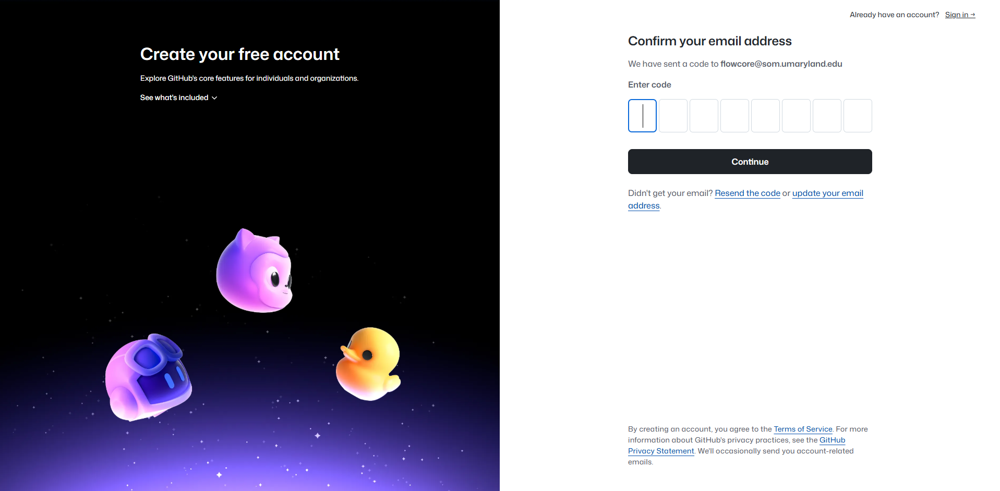
Once account creation has been confirmed, please proceed to login to GitHub for the first time.
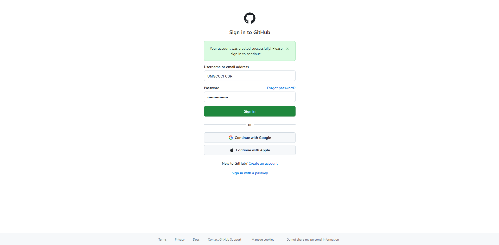
GitHub Profile
Upon creating a brand new account, your GitHub homepage will initially look rather empty, and can be intimidating to navigate for the first time.
For now, on the upper right, go ahead and click on the default profile picture icon…
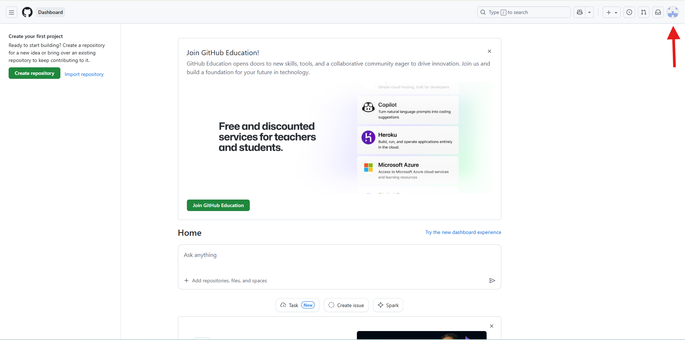
And then select Profile…

You are now on your public GitHub profile page. For a newly created account, it will look something like this:

For a more established account, this page will look a little different, and can be customized to highlight various projects that you are working on.
For this course, we will have you set up a basic GitHub profile page for now, although you are free to customize and personalize it as much as you may want to in the future!
To start, first select the edit profile button on the left below the default profile icon.
You can then proceed to fill in any details that you feel are relevant and are comfortable sharing.
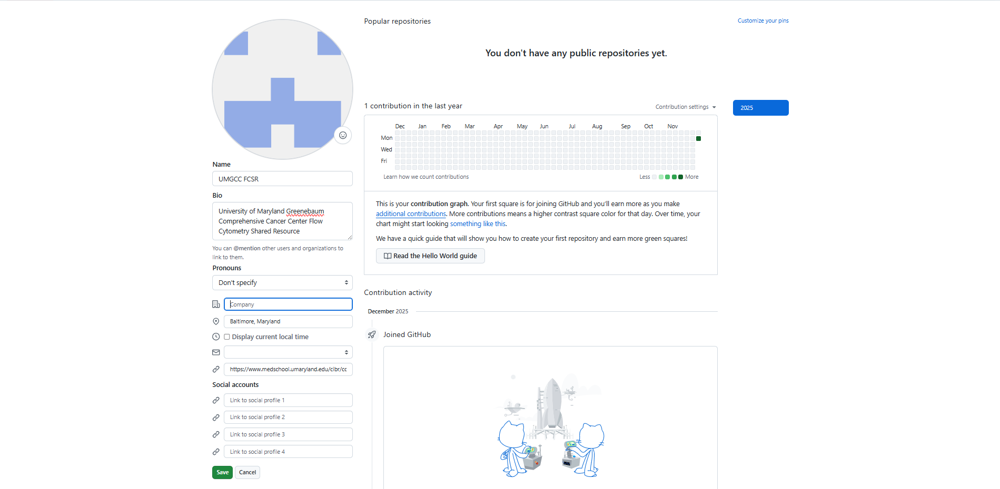
With the quick access details filled in, it is now time to navigate to the Settings tab. You will return to the previous menu dropdown on the upper right, and instead of selecting Profile, click on the Settings option.
You should now end up within your Public Profile Settings page.
Feel free to edit the default profile picture, and any other fields that you feel are relevant. Once done, continue to scroll down the page past ORCID ID.
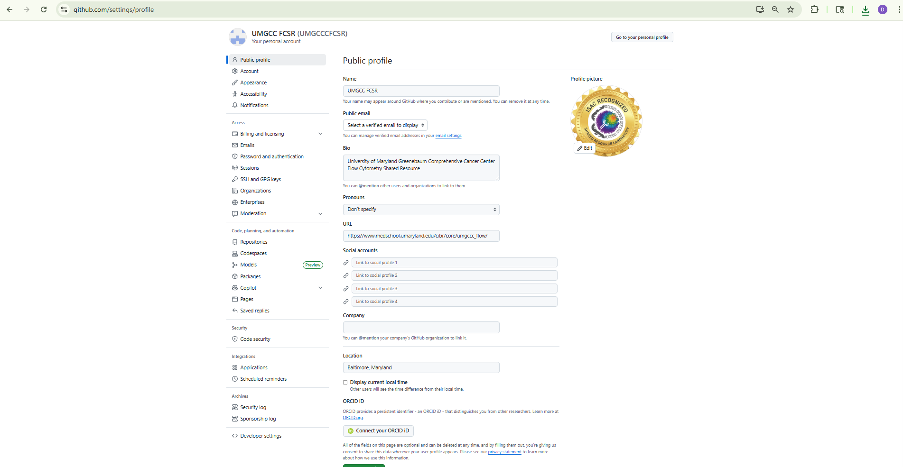
When you reach Contributions and Activity, go ahead and select the option to include private repositories in the activity summary graphic. Then scroll down and click save. You will now be returned to your GitHub profile page.
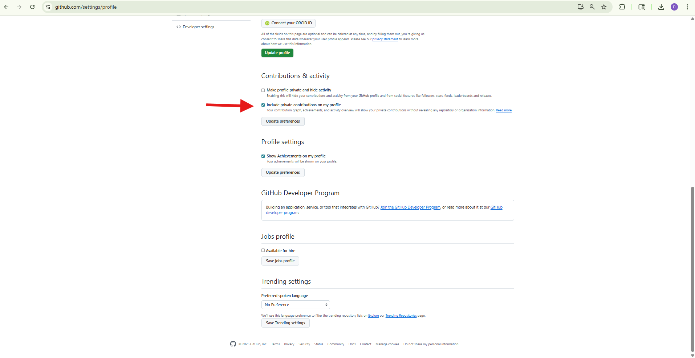
At the top of the profile, you will see a “Your contributions” calendar graph. For a new account, it will look like this:
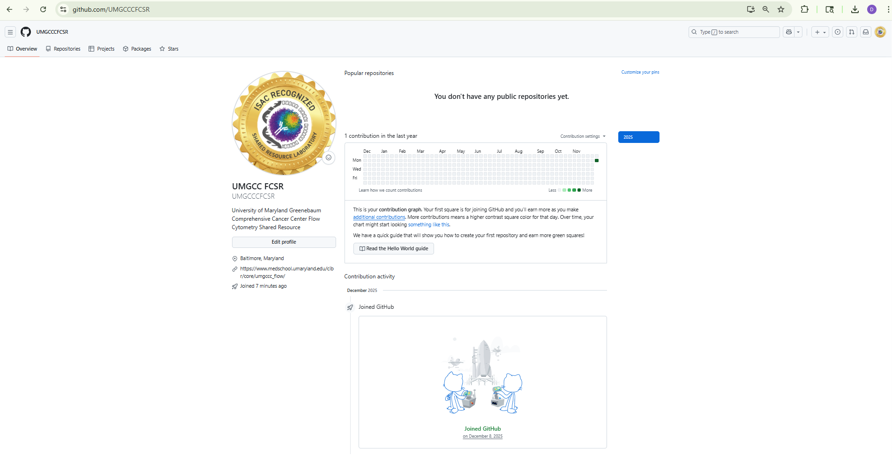
If you are just starting out, this chart will be mostly empty, but will fill in as you work on projects, see here as an example.
Every time you save your code (ie. make a commit), the activity will be reflected in this chart. By clicking the option in settings, code made within a private repository will remain private, but will count toward your contribution chart. As you progress through the course, this will provide a nice visual reminder of the progress you have made, and the obstacles that you have overcome.
GitHub ReadMe
With this done, we modify your GitHub profile by adding one customized element, a ReadMe page. This will be used for a couple projects during the course, and can be personalized further in the future.
To create a ReadMe page for your profile, we will navigate to the upper right of the screen and click on the + sign.

We will then select the Create New Repository option.

You will next create a repository (folder), naming it exactly the same as your username. This will be recognized by GitHub as being a special type of repository corresponding to the ReadMe section of your profile.
For options, leave the visibility as Public, and Add README set to On. And proceed to Create Repository.

Having created the repository (folder), you will see it has been populated by a few default files. For now, you will be editing the README.md file. On a new repository, the easiest way to access it is by clicking the green option on the right side of your screen.
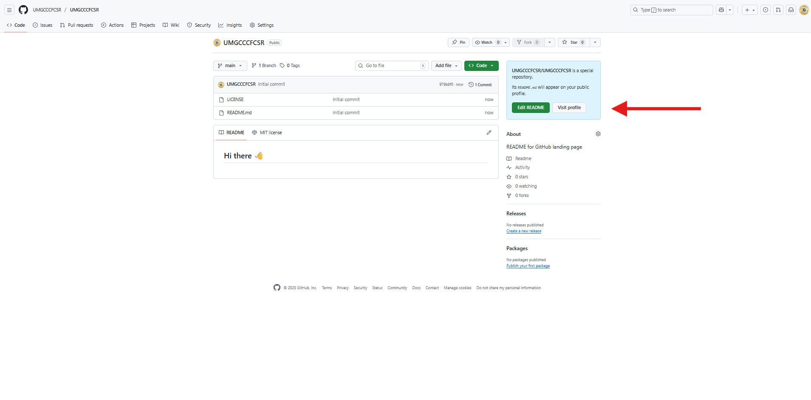
With the README.md file now opened, you will be able to see generic filler text that is suggested by GitHub.
For this course, I will ask you to add a couple elements for now. You are free to return and further personalize it later if you wish to do so.

The type of file that we are working with is a Markdown file, which can allow for a bunch of customizations which we will cover throughout the course.
For now, please add and customize the following questions:
Cytometry In R
Location: Baltimore, Maryland, USA
My Favorite Fluorophore/Metal-Isotope: Spark Blue 550
Previous Coding Experience: Repeatedly Calling IT
What I Hope to Get From This Course: A faster way to match FlowSOM clusters to their likely cell type.
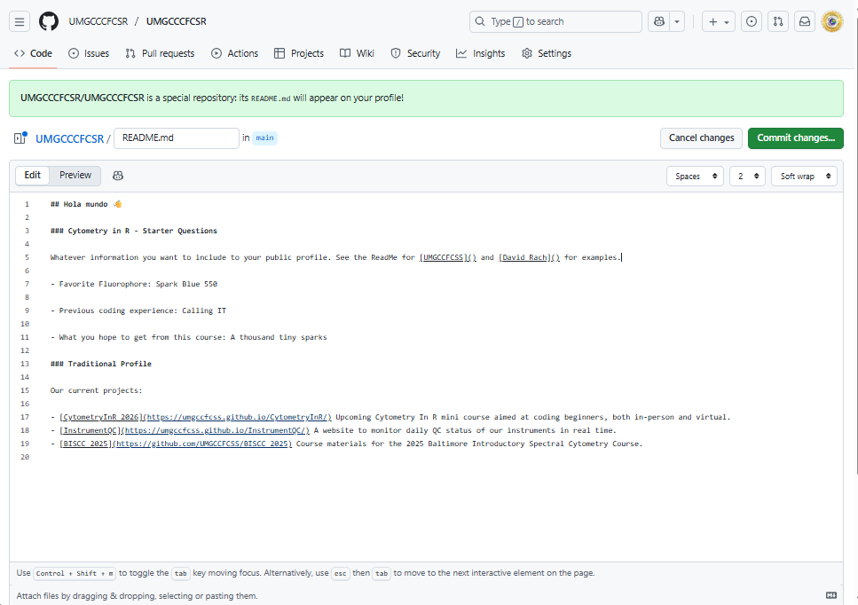
Next, to save you will select the green “Commit changes” button. We will cover the meaning of “Commit” more in-depth during the Git section.
For now, write a short summary of the change you made to the file in the “Commit message”, and any additional details within the “Extended description” field. When ready, click the green “Commit changes” button.
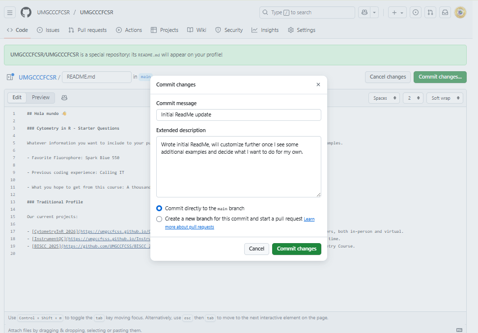
You will now be able to see the updated README.md file, as you can see in our example below. To make additional edits, you would select the pencil icon on the right-center side of the screen.

Next, navigate back to your profile page (by clicking on either your username or the Overview option on the tabs).
You will see that the README file contents are now displayed on the upper portion of your GitHub profile. Feel free to circle back and customize this further to your liking.
In this last example, we created your first repository (folder). Since this is public, it is now shown below the README section of the profile under your repositories. You can also see that your commits made in the process of making the changes are now shown both in the Contributions graph, and under the Contributor Activity summary at the bottom of the page.

GitHub Repository
Having set up your GitHub profile, it now is time to make sure you have access to our course materials. We will have you navigate to our course’s GitHub profile
On the profile page, you will be able to see our version of the README, our repositories, and the Contributions graph and Contribution activity sections.
Please click on the CytometryInR to navigate to its repository (folder)
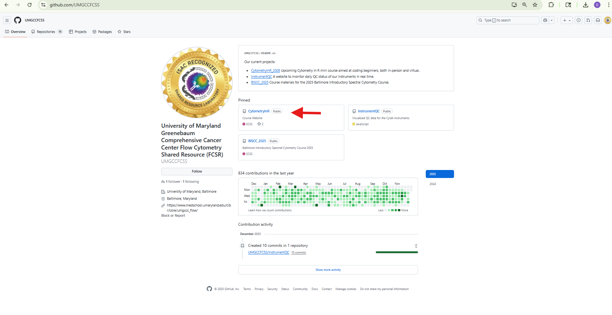
On this page, you will see several elements that you will be circling back to throughout the course.
For our course, we will be extentsively ussing the Discussions page as a community forum. If you have any questions, are looking for feedback, or want to show off something that you worked on, this is the place for it. This will also help make sure
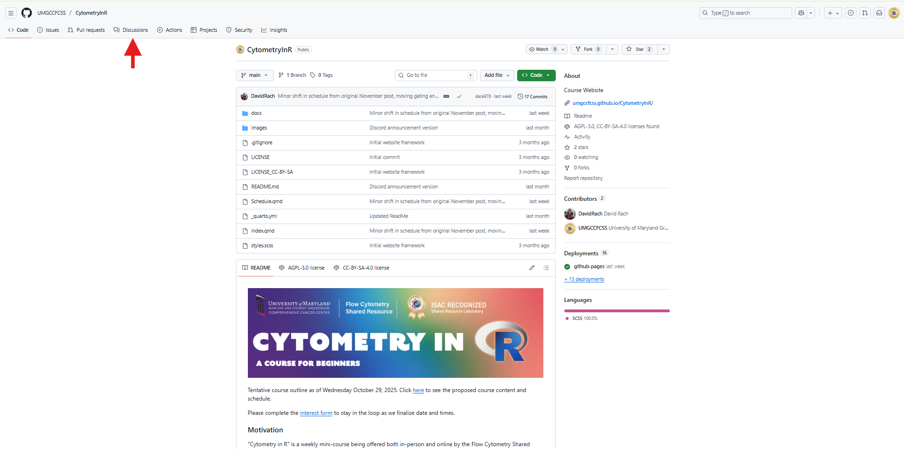
The Issues tab is where you will need to go to open an Issue if you encounter a bug (or major documentation typo), so that I can cicle back and correct them when I have the chance.
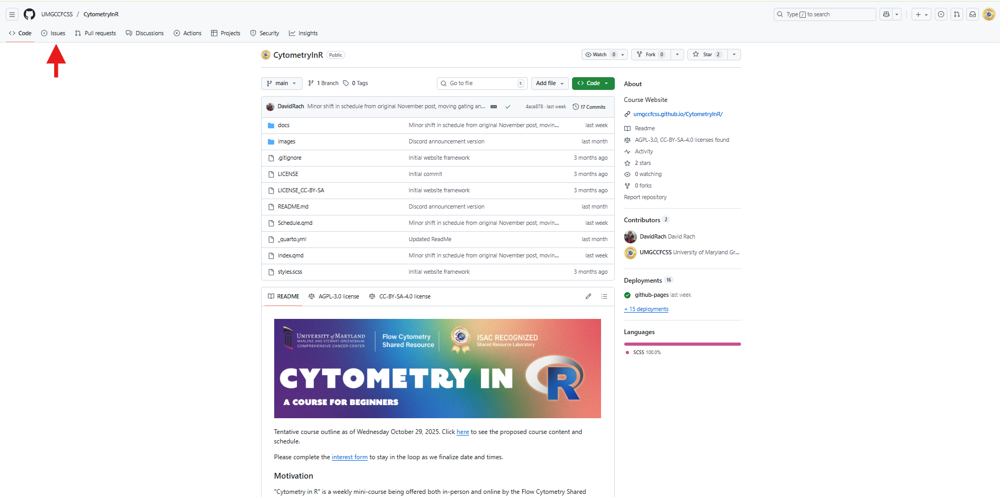
To submit the optional take-home problems, you would turn in these problems by going to the Pull Request tab, and initiating a pull request between your forked version of the project and our “homework” branch (more details on this later).

Optionally, you can “Star” a repository. This is basically the GitHub equivalent of liking a project. In our case, we will often star a repository since it will be saved under the Stars tab of our profile, which makes finding it again significantly easier a few weeks later after forgetting the repository name.

To see projects that you have starred, you can select the Stars option from the same dropdown you used to get to Settings.

Or from your GitHub profile, you can see these under Stars tab.

Forking CytometryInR
Before we go further, we will need you to make your own copy of the course repository (ie. fork it). This will allow you to quickly retrieve all the new materials and code corrections by simply rereshing (ie. syncing) your forked version with our upstream parent branch once a week.
To fork the course repository, you will select the “Fork repository” option on the upper-center portion of your screen.
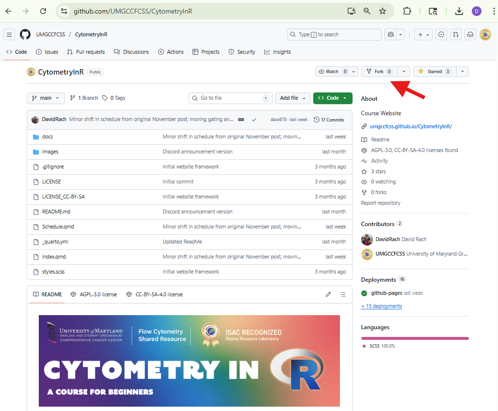
By “Fork-ing” a repository, you are basically copying the contents from that repository to a newly created repository on your own GitHub. Forked projects are still linked to the original (parent) fork, and can retrieve any updates via syncing, as well as return changes via a pull request.
For this course, when you create the fork, keep the existing repository name (“CytometryInR”). Importantly, select the copy main branch option. This will ensure you only get the code and data needed for the course copied over, and don’t end up with your entire hard-drive filled will website elements, or other people’s solutions to the take-home problems.

Once you have created the fork, you will see your copy of the forked repository under your own username. Seeing as you have just now forked the project, you will see the notification that you are up to date with the existing version of the CytometryInR course repository.
As we go through the course, and new material is released each week on Sunday at 2200 EST (Monday 0300 GMT+0), you will see this changed to behind the main branch by a number of commits, and have the option to sync in the changes to your fork to gain access to that week’s material.
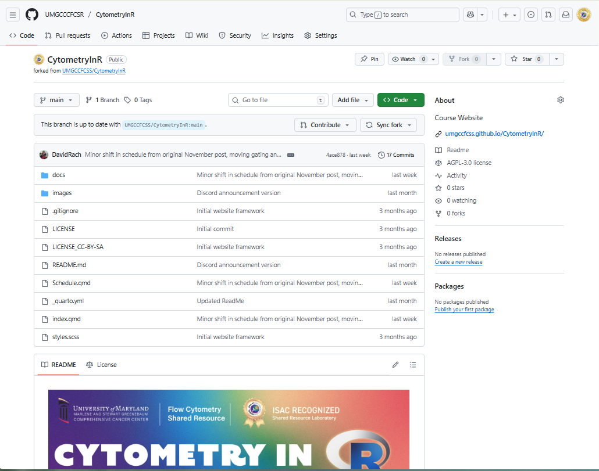
If you remember, previously under your GitHub profile, the Repositories tab only contained the repository corresponding to your ReadMe section.

You should however now be able to see your fork of the CytometryInR repository. As you add project specific repositories throughout the course, they will also appear here.

Wrap-Up
We have now completed our walk-through of setting up a GitHub account. At this point, you should have modified your GitHub profile, added a README section, and most importantly, forked the CytometryInR repository so that you can easily retrieve the new course materials each week.
Next up, we will have you proceed to installing the required software to your computer that will be needed throughout the course. Installation instructions will vary depending on your computer’s operating system, so please follow the appropiate walkthrough.
Additional Resources
Git & GitHub Tutorial for Scientist: It’s Not Only for Programmers
Ten Simple Rules for Taking Advantage of Git and GitHub
A brief introduction to Git for beginers
How to Use GitHub for Beginners